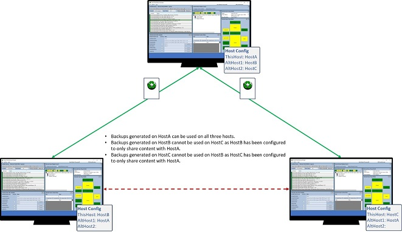
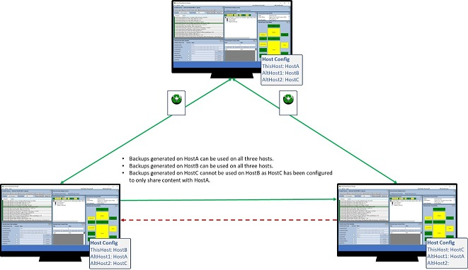
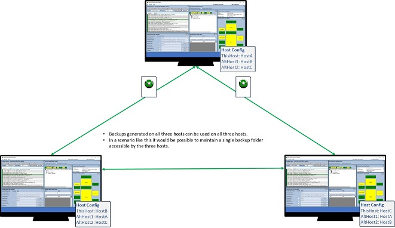

Backup File Management
Virtual Pinball Backup Manager - managing your backups, one game at a time
Virtual Pinball Backup Manager - managing your backups, one game at a time
Virtual Pinball Backup Manager (VPBM) backup files have a built in mechanism control where they can be used. This prevents unauthorised sharing of games as intended target host machine details must be known prior to games being backed up. This means that backups cannot be generated on one host machine and exported globally.
For many people, their virtual pinball environment contains a single pincab, however, other scenarios exist where people have multiple cabinets and download machines. One example of this would be a person with an existing cabinet, n the process of building a replacement cabinet.
VPBM addresses these scenarios by adding a mechanism by which up to two alternate hosts may be specified by VPBM on a host installation, once set, all game backups created from that point forward will be readable by instances of VPBM installed on the host, as well as on any host listed as an alternate host.
Below are three example scenarios of how alternate hosts may be configured on a collection of three example host installs of VPBM. For each host VPBM install in these examples, an abstract version of the host configuration is provided showing which hosts have been allocated as alternate hosts. Information on how to configure alternate hosts is provided here.
In the first scenario, a master host (HostA) has been configured to share backups with two connected hosts (HostB and HostC) however backups created on HostB and HostC are only shared with the master host HostA.
In the second scenario, backups created on HostC is only shared with HostA, however any backups created on hosts HostA or HostB are shared with all three hosts.
In the final scenario, all three hosts have been configured to support sharing with the other two hosts in the example. This scenario is the cleanest scenario to use, and would support a setup where backups are stored on a central drive accessible to the three hosts, avoiding the need to transfer backups. Furthermore, this scenario would remove the cases where backups are shared to a host unable to process it.
At selected times VPBM will perform checks of backup files to ensure that they are compatible with the current host. Some of these checks are triggered automatically while others are triggered by the user.
In most cases, when backup files are found to be incompatible, the user is given the option to delete them, or to shutdown to resolve. The exception to this is when the files found to be invalid are in a list of games being operated on in a bulk operation. in this case, the user is notified, and is able to take steps to address these issues post the bulk operation completing.
A high level summary of how checks are triggered is provided below.
At startup, VPBM checks the compatibility of all backups found for installed games. Should any backups be found to be incompatible, a warning dialog is provided detailing the backups found to be incompatible, logs are also updated to detail the incompatible backups. Users are then able to either automatically delete the incompatible backups, or shutdown and address the issues manually. At most 25 incompatible backups will be displayed in this dialog.

Users can manually trigger checks of backups (either all backups or just selected backups) by clicking one of the refresh commands from the main windows. Like at startup, an option is presented to delete all incompatible backups.
When the currently selected (to display) game changes, or an operation is performed on the current game requiring access to the backup (such as performing an individual file restore) checks are made to ensure the backup is still compatible. If issues are found the user is prompted and may choose to delete (and recreate) the backup, or to shutdown and investigate why there are issues.

When a bulk operation is launched which requires backup content to be processed, any backups with issues are skipped and a report is provided following the operation to outline the issues discovered, such as the dialog below, which shows that two backups could not be restored out of the backups selected due to incompatibilities. Should incompatibilities be detected, electing to use the Refresh commands will allow the user to see the explicit backups in question and allow them to be deleted if required.